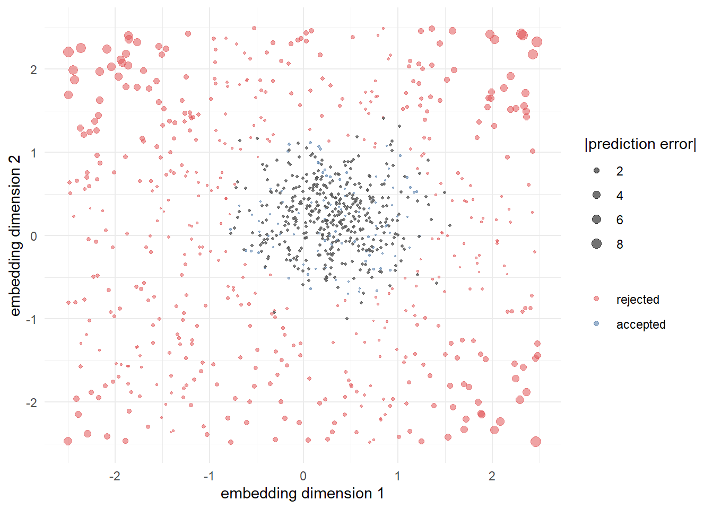

flowchart LR
A[Raw corpus<br/>reviews, posts, calls] --> B[Preprocess<br/>tokenize, normalize,<br/>filter]
B --> C[Represent<br/>BoW / TF-IDF /<br/>embeddings]
C --> D{Modeling goal}
D -->|discover| E[Topic models<br/>LDA, STM]
D -->|measure| F[Sentiment /<br/>stance]
D -->|classify| G[Supervised<br/>classifier]
D -->|extract| H[LLM<br/>extraction]
E --> V[Validate vs.<br/>human labels]
F --> V
G --> V
H --> V
V -->|downstream| I[Regression /<br/>causal model]
45 Text as Data
Most of what consumers tell firms is now written down. Product reviews, social-media posts, search queries, customer-service chats, call-center transcripts, open-ended survey responses, and the firm’s own filings constitute a stream of unstructured text that dwarfs the structured panels marketing science was built on. Text as data is the program of turning that stream into quantities a model can ingest: counts, vectors, topic loadings, sentiment scores, extracted entities. The premise is that language carries measurable information about constructs marketers care about—product quality, brand sentiment, unmet needs, persuasion, emotion—and that this information can be recovered at scale, cheaply, and in near real time (Netzer and Srinivasan 2011; Hartmann et al. 2023). Text is the most developed branch of the broader unstructured-data program in marketing (Balducci and Marinova 2018), and three methodological reviews now anchor it: Berger et al. (2020) survey how text becomes marketing insight across the field’s subdisciplines, Humphreys and Wang (2018) lay out automated text analysis as a measurement workflow for consumer research, and Hartmann et al. (2023) carry the program into the era of large language models. This chapter follows the capture–represent–analyze–validate spine those reviews share, laid out in this part’s introduction.
The promise is genuine but the discipline is unforgiving. Text is high-dimensional, sparse, and context-dependent; the same word means different things in different sentences, and the same meaning is expressed in countless surface forms. Every step of a text pipeline—how a document is represented, which model maps that representation to a target, how the output is validated—embeds assumptions that can quietly determine the answer. A sentiment lexicon that scores tokens at face value will misread sarcasm (Chapter 46); a topic model with the wrong number of topics will split or merge constructs; a classifier trained on one platform will degrade on another. Treating text as data therefore means treating measurement seriously: defining the construct first, choosing a representation whose assumptions are defensible for that construct, and validating against ground truth before any downstream regression is run.
This chapter develops the pipeline in the order a working researcher confronts it. It begins with representation—how to turn a document into a vector, from the bag-of-words and its term-weighting refinements through dense neural embeddings. It then covers unsupervised discovery via topic models, the marketing workhorse being latent Dirichlet allocation and its supervised and structural descendants. From there it turns to measurement of attitudes—sentiment, emotion, and the harder problem of stance—and to supervised text classification, where a labeled sample trains a map from text to category. It closes with large-language-model (LLM) extraction, the current frontier, in which a general-purpose model is prompted to read documents and emit structured fields, and with the validation and identification problems that recur across all of these methods. Throughout, the marketing applications are concrete: mining reviews for quality and demand signals, listening to social media for brand health, and extracting structure from sales and service calls.
45.1 The Text-as-Data Pipeline
Before any method, it helps to fix the shape of the problem. A corpus is a collection of \(N\) documents \(\{d_1,\dots,d_N\}\); a document is a sequence of tokens drawn from a vocabulary \(V\) of size \(|V|\). The analyst’s job is to map each document to a representation \(\mathbf{x}_i \in \mathbb{R}^p\) and then to a target—a topic distribution, a sentiment score, a category label, or an extracted field. The generic pipeline runs in four stages (Figure 45.1), and most of the consequential modeling choices are made in the first two, not the last.
Preprocessing is the unglamorous step that fixes the unit of analysis: lowercasing, tokenization, removal of stop words (high-frequency function words such as the, of, and that carry little topical content), stemming or lemmatization (collapsing inflected forms to a root), and pruning rare tokens. Each choice trades information against noise and is not innocuous—stemming running, runs, and ran to run helps a topic model but destroys tense information a stance model might need. The guiding principle is that preprocessing should be chosen to preserve the signal for the specific construct being measured, not applied as a reflex.
45.2 Representing Text
A model cannot consume words; it consumes vectors. How a document becomes a vector is the first and most consequential modeling decision, because the representation fixes what the model can possibly learn. Three families dominate, in increasing order of expressiveness and opacity: the bag-of-words, term-weighted variants such as TF-IDF, and dense embeddings.
45.2.1 The Bag-of-Words
The bag-of-words (BoW) representation discards word order and records only which terms appear and how often. Document \(d_i\) becomes a vector of term counts over the vocabulary, \[ \mathbf{x}_i = (c_{i1}, c_{i2}, \dots, c_{i|V|}), \qquad c_{ij} = \#\{\text{occurrences of term } j \text{ in } d_i\}, \tag{45.1}\] and the corpus becomes a sparse \(N \times |V|\) document–term matrix (DTM). The modeling assumption is exchangeability: a document is treated as an unordered multiset of words, so “service slow but food great” and “food slow but service great” map to the same vector even though they say opposite things. This is plainly false about language, yet it is a workable approximation for tasks that depend on topical composition rather than syntax, and it underpins the entire family of count-based topic models in Section 45.3.
The BoW’s virtues are transparency and tractability: every dimension corresponds to a human-readable term, and the resulting matrix, though wide, is sparse and amenable to linear methods. Its costs are equally clear. Word order is gone, so negation (“not good”) and figurative inversion (Chapter 46) are invisible. Dimensionality equals vocabulary size, which grows with corpus size, producing the curse of dimensionality: in \(\mathbb{R}^{|V|}\) almost every pair of documents is nearly orthogonal, and naive distances become uninformative. And the representation is context-free—bank (river) and bank (finance) collapse to one dimension. Partial remedies include \(n\)-grams (contiguous token sequences of length \(n\), so bigrams recover local phrases like “not good”) and collocation detection, but these inflate dimensionality further without solving the underlying context problem.
45.2.2 Term Weighting and TF-IDF
Raw counts overweight ubiquitous words. A term appearing in every document discriminates between none of them, however frequent. Term frequency–inverse document frequency (TF-IDF) corrects this by reweighting each count by how distinctive the term is across the corpus. Let \(\mathrm{tf}_{ij}\) be the frequency of term \(j\) in document \(i\) and let \(\mathrm{df}_j = \#\{i : c_{ij} > 0\}\) be the number of documents containing term \(j\). The TF-IDF weight is \[ w_{ij} \;=\; \mathrm{tf}_{ij} \times \log\!\frac{N}{\mathrm{df}_j}, \tag{45.2}\] where the second factor, the inverse document frequency, is large for rare terms and approaches zero for terms appearing in every document. The construction has an information-theoretic reading: \(\log(N/\mathrm{df}_j)\) is, up to a constant, the self-information of observing term \(j\) under a uniform document-occurrence model, so TF-IDF upweights surprising terms (Shannon 1948; Weaver, Shannon, et al. 1963). In practice term frequency is often dampened (e.g., \(1 + \log \mathrm{tf}_{ij}\)) to keep a term that appears fifty times from counting fifty times as much as one appearing once, and the resulting document vectors are length-normalized so that comparisons do not merely reflect document length.
The natural similarity measure on TF-IDF vectors is the cosine similarity, \[ \mathrm{sim}(d_i, d_k) = \frac{\mathbf{w}_i^{\top} \mathbf{w}_k} {\lVert \mathbf{w}_i \rVert \, \lVert \mathbf{w}_k \rVert}, \tag{45.3}\] which measures the angle between document vectors and is invariant to length. Cosine similarity over TF-IDF is the backbone of information retrieval and of marketing applications that need a map of how products, brands, or texts relate—Netzer and Srinivasan (2011) build exactly such a similarity structure from online forum text to recover a market’s competitive map, inferring which brands consumers mention together and how the perceptual structure of a category is organized. The following code builds a DTM, applies TF-IDF weighting, and computes the pairwise cosine similarity of a small set of reviews.
Code
set.seed(49)
reviews <- c(
"battery life is short the phone dies fast and charging is slow",
"great camera the photos are sharp and the screen is bright",
"the battery drains quickly and charging takes forever",
"excellent screen and the camera takes beautiful sharp photos"
)
# 1. Tokenize and build a document-term matrix (bag-of-words counts)
stop_words <- c("is", "the", "and", "are", "a", "of")
tokens <- lapply(strsplit(tolower(reviews), "\\s+"),
function(w) w[!w %in% stop_words])
vocab <- sort(unique(unlist(tokens)))
dtm <- t(sapply(tokens, function(w)
as.integer(table(factor(w, levels = vocab)))))
colnames(dtm) <- vocab
# 2. TF-IDF weighting (eq-tfidf): tf * log(N / df)
N <- nrow(dtm)
df <- colSums(dtm > 0)
idf <- log(N / df)
tfidf <- sweep(dtm, 2, idf, `*`)
# 3. Cosine similarity (eq-cosine) between documents
norms <- sqrt(rowSums(tfidf^2))
cosine <- (tfidf %*% t(tfidf)) / outer(norms, norms)
round(cosine, 2)
#> [,1] [,2] [,3] [,4]
#> [1,] 1.0 0.00 0.10 0.00
#> [2,] 0.0 1.00 0.00 0.32
#> [3,] 0.1 0.00 1.00 0.07
#> [4,] 0.0 0.32 0.07 1.00The similarity matrix recovers the latent structure a human would: reviews 1 and 3 (both about battery and charging) are close, as are reviews 2 and 4 (both about camera and screen), while across-theme pairs are nearly orthogonal—exactly the perceptual map logic at scale.
TF-IDF is not a model of language; it is a model of distinctiveness. It will rank a term as informative whenever it is rare in the corpus, regardless of whether rarity tracks meaning. In a corpus of camera reviews, “camera” carries near-zero IDF and disappears—useful for retrieval, fatal if “camera” is the construct of interest. The corpus defines the contrast; choose it deliberately.
45.2.3 Dimensionality Reduction
Even weighted, the DTM is wide and collinear: synonyms (“photo”, “picture”, “image”) load on separate dimensions that mean the same thing. Latent semantic analysis (LSA) compresses the DTM by a truncated singular value decomposition, \(\mathbf{X} \approx \mathbf{U}_k \boldsymbol{\Sigma}_k \mathbf{V}_k^{\top}\), projecting documents into a \(k\)-dimensional semantic space in which synonymous terms collapse onto shared directions. LSA is the linear-algebraic ancestor of the topic models in Section 45.3 and of the embeddings in Section 45.2.4: all three answer the same complaint—that the BoW’s dimensions are too many, too sparse, and too literal—but they differ in whether the latent dimensions are interpretable (topics) or merely predictive (embeddings).
45.2.4 Word and Document Embeddings
The deepest limitation of count representations is that they are one-hot at the term level: every word is a distinct dimension, equidistant from every other, so the model has no prior that excellent is closer to great than to battery. Embeddings replace this with distributed representations in which each term is a dense vector \(\mathbf{v}_w \in \mathbb{R}^d\) (\(d\) typically 50–1000) learned so that geometric proximity encodes semantic similarity. The learning principle is the distributional hypothesis—words appearing in similar contexts have similar meanings—operationalized by training a model to predict a word from its neighbors (or vice versa) across a large corpus. Static word embeddings such as those of the word2vec and GloVe families (Pennington, Socher, and Manning 2014) famously place synonyms near one another and encode analogies as vector offsets, and they enter marketing as a way to measure semantic constructs: Hartmann et al. (2021) use the geometry of language to study how powerful versus powerless brand communication is perceived, and embedding-based features improve the prediction of consumer response over BoW baselines (Hartmann et al. 2023).
Two limitations of static embeddings motivate the modern default. First, they assign one vector per word type, so the two senses of bank still collapse. Second, a document is more than its words. Contextual embeddings from transformer models (the BERT and GPT families (Devlin et al. 2019)) solve the first by producing token vectors that depend on the surrounding sentence, so bank by a river and bank with interest receive different representations. Sentence and document embeddings solve the second by pooling token representations into a single vector \(\mathbf{e}_i\) for the whole document, which can then be fed to any downstream model exactly where a TF-IDF vector would go—but carrying word order, negation, and context that the BoW threw away. This is the representation underneath most current sentiment, classification, and retrieval systems, and it is what makes LLM-based extraction (Section 45.6) possible.
Table 45.1 summarizes the trade-offs. The progression is monotone in expressiveness and in opacity: each step captures more of language and explains less of itself.
Code
library(knitr)
repr <- data.frame(
Representation = c("Bag-of-words", "TF-IDF", "Static embedding",
"Contextual embedding"),
`Captures order` = c("No", "No", "No", "Yes"),
`Captures context` = c("No", "No", "Partly", "Yes"),
Interpretable = c("High", "High", "Low", "Low"),
`Dimensionality` = c("|V| (sparse)", "|V| (sparse)", "d ~ 300", "d ~ 768+"),
check.names = FALSE
)
kable(repr)| Representation | Captures order | Captures context | Interpretable | Dimensionality |
|---|---|---|---|---|
| Bag-of-words | No | No | High | |V| (sparse) |
| TF-IDF | No | No | High | |V| (sparse) |
| Static embedding | No | Partly | Low | d ~ 300 |
| Contextual embedding | Yes | Yes | Low | d ~ 768+ |
45.3 Topic Models
Often the goal is not to predict a known label but to discover the latent themes a corpus is about—the dimensions of quality consumers discuss, the issues a brand’s mentions cluster into, the topics a thousand call transcripts span. Topic models are unsupervised generative models that posit a small set of latent topics, each a probability distribution over the vocabulary, and explain each document as a mixture of those topics. They turn a wide, sparse DTM into a narrow, interpretable document–topic matrix, and they have become a marketing workhorse for reviews, social media, and open-ended text (Tirunillai and Tellis 2014; Büschken and Allenby 2016).
45.3.1 Latent Dirichlet Allocation
Latent Dirichlet allocation (LDA) is the canonical topic model (Blei, Ng, and Jordan 2002). Its generative story is the source of both its power and its assumptions. Fix \(K\) topics. Each topic \(k\) is a distribution \(\boldsymbol{\beta}_k\) over the \(|V|\) vocabulary terms, drawn from a Dirichlet prior. Each document \(i\) has its own distribution \(\boldsymbol{\theta}_i\) over the \(K\) topics, also Dirichlet. Then every word in the document is generated by first drawing a topic and then drawing a term from that topic’s vocabulary distribution:
\[ \begin{aligned} \boldsymbol{\theta}_i &\sim \mathrm{Dirichlet}(\alpha), & \boldsymbol{\beta}_k &\sim \mathrm{Dirichlet}(\eta), \\ z_{in} \mid \boldsymbol{\theta}_i &\sim \mathrm{Categorical}(\boldsymbol{\theta}_i), & w_{in} \mid z_{in}, \boldsymbol{\beta} &\sim \mathrm{Categorical}(\boldsymbol{\beta}_{z_{in}}), \end{aligned} \tag{45.4}\]
for word positions \(n = 1,\dots,N_i\), where \(z_{in}\) is the (latent) topic assignment of word \(n\) and \(w_{in}\) the observed term. Three assumptions are doing the work, and each is a place identification can break. (i) Bag-of-words: words are exchangeable within a document, so LDA inherits the BoW’s blindness to order and negation. (ii) The Dirichlet prior on \(\boldsymbol{\theta}_i\) controls how concentrated documents are on few topics; its hyperparameter \(\alpha\) is a researcher choice that shapes the solution. (iii) The number of topics \(K\) is fixed in advance and is not identified by the model—too few topics merge distinct themes, too many shatter one theme across several, and there is no purely statistical oracle for the right \(K\).
Estimation targets the posterior over the latent quantities \(p(\boldsymbol{\theta}, \boldsymbol{\beta}, \mathbf{z} \mid \mathbf{w})\), which is intractable in closed form. Two estimators dominate. Collapsed Gibbs sampling integrates out \(\boldsymbol{\theta}\) and \(\boldsymbol{\beta}\) and samples each word’s topic assignment \(z_{in}\) conditional on all others, with the update probability proportional to how often topic \(k\) is used in document \(i\) times how strongly topic \(k\) favors term \(w_{in}\). Variational inference instead replaces the posterior with a tractable factorized family and optimizes it to be as close as possible, trading exactness for speed at scale. Both recover, for each document, an estimated topic mixture \(\hat{\boldsymbol{\theta}}_i\)—a \(K\)-vector that is the document’s reduced representation—and, for each topic, its top-weighted terms, which the analyst reads to name the topic.
That last step is where rigor is won or lost. Topics are not labels; they are distributions an analyst must interpret and validate. A topic is identified only up to the researcher’s willingness to call its high-probability terms a coherent theme, and two failure modes recur: a junk topic dominated by corpus-specific boilerplate, and a blended topic mixing two themes that better \(K\) or better priors would separate. The honest practice is to choose \(K\) by a combination of held-out perplexity (predictive fit on unseen documents), topic coherence (whether a topic’s top terms co-occur in the corpus more than chance), and human inspection—and to report sensitivity to that choice rather than presenting a single \(K\) as given.
Code
set.seed(49)
# Small synthetic corpus with two latent themes: "battery/charging" and "camera/screen"
docs <- c(
"battery charging power drain battery slow charging",
"camera photo screen bright sharp camera photo",
"battery power slow charging drain battery",
"screen camera sharp photo bright screen camera",
"battery charging drain power slow battery charging",
"photo camera screen sharp bright camera photo"
)
corp <- strsplit(docs, "\\s+")
vocab <- sort(unique(unlist(corp)))
dtm <- t(sapply(corp, function(w)
as.integer(table(factor(w, levels = vocab)))))
colnames(dtm) <- vocab
if (requireNamespace("topicmodels", quietly = TRUE)) {
library(topicmodels)
lda <- LDA(dtm, k = 2, control = list(seed = 49))
# Top terms per topic (beta): what each topic is "about"
terms_by_topic <- terms(lda, 4)
print(terms_by_topic)
# Document-topic mixtures (theta): the reduced representation
print(round(posterior(lda)$topics, 2))
} else {
message("Install 'topicmodels' to run this example.")
}
#> Topic 1 Topic 2
#> [1,] "battery" "photo"
#> [2,] "camera" "drain"
#> [3,] "charging" "camera"
#> [4,] "sharp" "battery"
#> 1 2
#> [1,] 0.5 0.5
#> [2,] 0.5 0.5
#> [3,] 0.5 0.5
#> [4,] 0.5 0.5
#> [5,] 0.5 0.5
#> [6,] 0.5 0.5The estimated topics separate the battery/charging theme from the camera/screen theme, and each document’s \(\hat{\boldsymbol{\theta}}_i\) places it on the corresponding mixture—an interpretable, low-dimensional summary that a downstream regression can use.
45.3.2 Extensions: Supervised and Structural Topic Models
Plain LDA is unsupervised and unconditioned: it ignores any document metadata and any outcome. Two extensions matter for marketing. Supervised topic models attach a response variable—a star rating, a sales figure—to each document and estimate topics that are predictive of that response, so the discovered themes are the ones that move the outcome rather than merely the ones that are frequent. Structural topic models (STM) let topic prevalence and topic content depend on observed covariates—brand, date, reviewer type—so the model can estimate, for example, how the share of discussion devoted to “battery” shifts across product generations or differs between verified and unverified reviewers. The marketing payoff is direct: Büschken and Allenby (2016) build a sentence-level topic model for product reviews that respects the fact that a single review discusses several attributes with different valence, recovering a more faithful attribute-level structure than a document-level bag-of-words allows, and Tirunillai and Tellis (2014) use latent-topic structure on user-generated content to extract the dimensions of brand perception consumers actually talk about. The general lesson is that conditioning the topic model on the structure of the marketing problem—attributes, metadata, outcomes—buys both interpretability and downstream validity.
45.4 Sentiment, Emotion, and Stance
A large share of text analytics in marketing reduces to one question: how does the writer feel? The answer is layered. Sentiment (or valence) is the positive– negative polarity of a text. Emotion is the finer affective state—joy, anger, fear, sadness—often modeled as discrete categories or as continuous arousal and dominance dimensions (Hartmann et al. 2021). Stance is the writer’s position toward a target (for or against a brand, a policy, a claim), which is distinct from sentiment: “I’m furious that they discontinued it” is negative in valence but pro-brand in stance. Conflating these three is a common and consequential error.
45.4.1 Lexicon Methods
The simplest sentiment estimator is a lexicon (or dictionary): a list of words with pre-assigned valence scores. The document score is an aggregation—typically the sum or mean of its tokens’ scores, \[ s_i = \frac{1}{N_i} \sum_{n=1}^{N_i} \mathrm{val}(w_{in}), \tag{45.5}\] where \(\mathrm{val}(\cdot)\) looks each token up in the lexicon and unscored tokens contribute zero. Lexicon scoring is transparent, fast, reproducible, and requires no training data, which is why it remains the default for large-scale “social listening” and for studies that need an auditable measure (Schweidel and Moe 2014). Its assumptions are also its weaknesses, and they are severe. Scoring is compositional in the wrong way: it sums token valences and so cannot represent negation (“not good” scores positive), intensification (“extremely good” scores like “good”), or figurative inversion—sarcasm and irony flip the intended meaning while leaving the tokens positive, biasing the estimate in a signed, construct-correlated way rather than merely adding noise (Chapter 46). The lexicon is also domain-blind: “unpredictable” is praise for a thriller and damnation for a car. The defensible use of a lexicon is as a transparent, validated baseline whose biases are bounded, not as a black box whose output is taken at face value.
45.4.2 Tone Is Not the Measure: Weighting by Attention
A subtler design error than any of the lexicon’s compositional failures is treating the tone of a corpus as the construct of interest. Tone is an intensity, not a quantity: coverage that is uniformly damning about a subject nobody is reading moves nothing. The construct that acts on behavior is closer to tone weighted by how much was said.
B. Liu and Ma (2026) make this concrete and show what it buys. They ask whether U.S. media sentiment about foreign countries shapes domestic investors’ international asset allocation, using flows into country-specific mutual funds as the demand proxy. Their sentiment measure is explicitly the interaction of negative tone with media attention, and it is that interaction—not tone alone—that predicts reduced flows into funds targeting the covered country. The measurement decision is the finding’s precondition: a country can be written about harshly and rarely, or neutrally and constantly, and only the product distinguishes the cases that matter.
Two further moves are worth copying. First, they separate the part of sentiment that tracks the target country’s economic fundamentals from the part that does not, and show the relationship survives on the residual—which is what converts “media covary with flows” into “media narratives shape flows,” since fundamentals would otherwise drive both. This is the text-as-data version of the confound problem raised in Section 45.4: a sentiment score computed from news is downstream of the world the news describes, and a design that does not partial out the world is measuring the world. Second, for the causal claim they use The Wall Street Journal’s acquisition by News Corp as a shock to editorial tone that is plausibly unrelated to the fundamentals of any particular covered country. An ownership change is a useful class of instrument for text-based measures generally: it moves the generating process for the text while leaving the underlying phenomenon alone.
45.4.3 Supervised and Model-Based Sentiment
When labeled data exist—star ratings as a proxy, or human-coded sentiment—a supervised model learns the mapping from representation to valence directly, absorbing negation, intensification, and domain-specific usage from the data rather than from a fixed list. This is simply the supervised-classification problem of Section 45.5 with a sentiment target, and contextual embeddings (Section 45.2.4) are what let modern sentiment models read “not good” correctly. The marketing literature has repeatedly shown that the dimensions of consumer affect—not just polarity—predict outcomes: Tirunillai and Tellis (2012) link the valence and volume of user-generated content to abnormal stock returns and trading volume, finding that negative word of mouth is the part that moves firm value, and review-level valence correlates with sales (Chevalier and Goolsbee 2003). Word-of-mouth research further distinguishes what is said from how it is said: emotional and self-referential language travels differently from neutral description (Packard, Gershoff, and Wooten 2016), and the linguistic features of a message—not only its sentiment—shape its persuasive and diagnostic value (Packard and Wooten 2013; Melumad and Pham 2020).
Sentiment is a construct, not a number. Before scoring a corpus, the analyst must decide whether the target is valence, emotion, or stance; whether it is measured at the document, sentence, or aspect level; and against what human ground truth the measure will be validated. A pipeline that skips these decisions produces a column of numbers with no defensible interpretation.
45.4.4 Aspect-Based Sentiment
A single review rarely has one sentiment. “The camera is superb but the battery is hopeless” is positive about one attribute and negative about another, and a document-level score averages the signal away. Aspect-based sentiment analysis (ABSA) decomposes a document into (aspect, sentiment) pairs, asking not “is this review positive?” but “what does it say, and how does it feel, about each attribute?” This is the natural marriage of the topic models of Section 45.3 with the sentiment models of this section, and it is where the marketing value concentrates: aspect-level structure tells a firm which attribute to fix, maps to the product’s feature hierarchy, and supports the perceptual maps of Section 45.2.2. Sentence-level and aspect-level models are precisely the response to document-level averaging (Büschken and Allenby 2016).
45.5 Supervised Text Classification
When the categories are known in advance—spam vs. ham, complaint vs. compliment, on- vs. off-topic, fake vs. genuine review—the problem is supervised classification: learn a function \(f: \mathbf{x}_i \mapsto y_i\) from a labeled training sample \(\{(\mathbf{x}_i, y_i)\}_{i=1}^{n}\) and apply it to unlabeled documents. The representation \(\mathbf{x}_i\) is any of those in Section 45.2; the estimator can be as simple as a linear model or as expressive as a fine-tuned transformer. What makes text classification its own subject is the combination of high dimensionality, sparse labels, and the need to validate against human judgment.
45.5.1 From Naive Bayes to Regularized Logistic Regression
The classical baseline is multinomial naive Bayes, which models the probability of a class given a document by assuming words are conditionally independent given the class: \[ p(y = c \mid d_i) \;\propto\; p(c) \prod_{j=1}^{|V|} p(\text{term}_j \mid c)^{\,c_{ij}}. \tag{45.6}\] The independence assumption is false—words are correlated—but naive Bayes is fast, needs little data, and is a stubbornly strong baseline. Its successor in most pipelines is \(\ell_1\)- or \(\ell_2\)-regularized logistic regression on TF-IDF features, which relaxes independence, handles correlated terms, and—through the penalty—survives the high-dimensional regime where \(|V|\) exceeds \(n\). The regularizer is not optional hygiene here; without it a model with more features than documents will fit the training noise perfectly and generalize not at all. At the frontier, fine-tuned contextual embeddings replace the linear model when enough labeled data exist and word order matters, but the regularized linear baseline remains the right first model: it is transparent, calibratable, and hard to beat on topical classification.
45.5.2 Training, Evaluation, and the Threats to Validity
The discipline of supervised text classification is mostly the discipline of honest evaluation. Three threats recur. First, leakage: any preprocessing fit on the full corpus—vocabulary selection, TF-IDF IDF weights, embeddings—must be learned on the training fold only, or the held-out estimate of accuracy is optimistic. Second, class imbalance: when one class is rare (fake reviews, churners, fraud), raw accuracy is useless—a model that always predicts the majority class scores well and detects nothing. The relevant metrics are precision (of the items flagged, how many are truly positive), recall (of the truly positive items, how many are flagged), and their harmonic mean the F1 score, reported per class. Third, distribution shift: a classifier trained on one platform, product category, or time period degrades on another, because the joint distribution of language and label is not stable. The only defense is out-of-distribution validation and periodic re-labeling—an estimate of accuracy on data drawn like the deployment data, not like the training data.
Code
# Confusion matrix and the metrics that matter under class imbalance.
# 1000 reviews, 5% genuinely fake; a model flags some as fake.
set.seed(49)
truth <- factor(c(rep("fake", 50), rep("genuine", 950)))
# Simulated classifier: catches 35 of 50 fakes, falsely flags 40 genuine
pred <- truth
pred[sample(which(truth == "fake"), 15)] <- "genuine" # missed fakes
pred[sample(which(truth == "genuine"), 40)] <- "fake" # false alarms
cm <- table(Predicted = pred, Actual = truth)
tp <- cm["fake", "fake"]; fp <- cm["fake", "genuine"]
fn <- cm["genuine", "fake"]
precision <- tp / (tp + fp)
recall <- tp / (tp + fn)
f1 <- 2 * precision * recall / (precision + recall)
accuracy <- sum(diag(cm)) / sum(cm)
cat("Accuracy :", round(accuracy, 3),
" (a 'predict genuine always' model scores", round(950/1000, 3), ")\n")
#> Accuracy : 0.945 (a 'predict genuine always' model scores 0.95 )
cat("Precision:", round(precision, 3),
" Recall:", round(recall, 3),
" F1:", round(f1, 3), "\n")
#> Precision: 0.467 Recall: 0.7 F1: 0.56Accuracy of 0.945 looks excellent yet conceals that the model misses a third of the fakes—exactly the diagnosis precision, recall, and F1 are designed to surface and that raw accuracy hides. A worked application of human-coded annotation as the ground truth for such a classifier is developed in Section 46.5.
45.6 LLM-Based Extraction
The newest tool collapses much of the pipeline. A large language model (LLM) is a transformer trained on web-scale text to predict the next token; the surprising consequence is that, suitably prompted, it performs many text tasks—classification, sentiment, summarization, entity and attribute extraction—with little or no task-specific training data (Hartmann et al. 2023). The marketing use that matters most is structured extraction: prompting the model to read an unstructured document (a review, a call transcript, a complaint) and emit a structured record—attributes mentioned, their sentiment, the customer’s stated intent, whether a competitor was named—directly usable in a downstream model. Where supervised classification needs a labeled training set per task, an LLM can often produce a usable first pass zero-shot (from instructions alone) or few-shot (from a handful of in-context examples), which is transforming the cost structure of coding large corpora. Figure 45.2 sketches this schema-bearing prompt-to-record workflow.
flowchart LR
A[Unstructured doc<br/>review / call / post] --> C[LLM]
B[Prompt:<br/>schema + instructions<br/>+ few-shot examples] --> C
C --> D[Structured record<br/>aspect, sentiment,<br/>intent, entities]
D --> E{Validate vs.<br/>human labels}
E -->|adequate| F[Downstream<br/>analysis]
E -->|inadequate| B
The capability is real, but treating LLM output as data demands more discipline, not less, because the failure modes are different and less visible than a misfit regression. Four cautions are first-order. (i) Hallucination: an LLM can emit confident, well-formed fields that are not supported by the document; extracted values must be checked against the source, not trusted because they parse. (ii) Non-determinism and prompt sensitivity: the same document under a slightly different prompt, or the same prompt on a different day, can yield different output, so the prompt and model version are part of the measurement instrument and must be fixed and reported. (iii) Train–test contamination and circularity: if the construct being measured is itself derived from the kind of text the model was trained on, the “measurement” may be recovering the model’s priors rather than the document’s content. (iv) Validation remains mandatory: an LLM extractor is an unvalidated classifier until its output has been compared, on a held-out human-labeled sample, against the ground truth—the same precision/recall/F1 discipline of Section 45.5.2 applies unchanged. Marketing research using LLMs and machine learning on consumer text is accelerating (Hartmann et al. 2023; Ananthakrishnan et al. 2025; Gao, Wang, and Yu 2024), and the methodological center of gravity is precisely this: the model is a powerful, cheap annotator whose output must still earn its place in a regression by being validated like any other measure. (For the LLM/API specifics—model selection, prompting, and structured-output mechanics—the appropriate provider documentation should be consulted; this chapter treats LLMs as measurement instruments, not as an engineering topic.)
45.7 Text as Treatment: Causal Prediction for Novel Content
Everything so far has treated text as a measurement of something—sentiment, topic, intent. A different and harder use treats text as the treatment: the subject line, the ad copy, the product description is the intervention whose effect on behavior the firm wants to know. Generative models make this problem acute rather than easier. When a team can produce two thousand candidate subject lines in an afternoon, creation stops being the bottleneck and selection becomes the managerial problem: which of these should be sent, given that only a handful can be tested?
Ellickson et al. (2026) formalize the task as causal prediction. The object to be learned is a response surface mapping a representation of content to an outcome, estimated so that it carries a causal interpretation for content that has never been deployed. Their framework has three moving parts, and each answers a distinct failure mode.
Representation. Previously deployed content is embedded with a pretrained large language model, so that the treatment lives in a continuous space in which “similar copy” means “nearby vector” rather than “shares keywords.” This is the same move as Section 45.2, but the embedding now indexes a treatment arm rather than a document to be classified. The lineage runs through Ellickson, Kar, and Reeder (2023), who use double machine learning to recover the effects of individual components of targeted digital promotions rather than of a campaign as a whole.
Identification. Historical campaigns were not randomly assigned to customers: better copy tends to have been sent to better-responding segments, and content choices correlate with season, product, and targeting rules. A response surface fit to raw historical outcomes therefore inherits that confounding. The framework’s estimation stage is built to recover the causal relation between content features and outcomes given the observed assignment process, not the raw conditional mean.
Extrapolation control. This is the part with no counterpart in ordinary predictive modeling. A fitted surface will happily score a candidate that looks nothing like anything the firm has ever sent; the number it returns is an extrapolation dressed as a prediction. The authors screen candidates with a rejection-sampling procedure: proposals from the generative model are accepted only when they are close enough to the historical content distribution for the surface to be informative, and the acceptance threshold is explicitly a statement about how much resemblance to past campaigns is enough. Content that fails the screen is not condemned as bad—it is routed to direct experimentation, because that is the only instrument that can evaluate it. In a large-scale email application (3.3 million observations across 34 campaigns), the framework improved both out-of-sample prediction and realized deployment performance relative to standard approaches, and supported outcome-guided generation: generating candidates, scoring them, and keeping the ones the data can vouch for.
The mechanics are worth seeing in miniature. Below, content lives in a two-dimensional embedding space; the true causal response surface is nonlinear; the historical deployment log covers only part of the space (a firm that has always written in one voice); and a generative model proposes candidates drawn from a much wider region. We fit the surface on history, then compare prediction error for accepted versus rejected proposals under a simple support screen (distance to the \(k\) nearest historical embeddings).
Code
set.seed(11)
# --- True causal response surface over a 2-D "embedding" of copy ---------------
# Dimension 1 ~ concreteness, dimension 2 ~ urgency; the truth is nonlinear and
# interactive, which is why a locally fit surface cannot be trusted far from data.
truth <- function(z1, z2) 0.9 * z1 - 0.4 * z1^2 + 0.6 * z2 * z1 - 0.3 * z2
# --- Historical deployment log: the firm has only ever written in one register --
n_hist <- 400
deployed <- data.frame(z1 = rnorm(n_hist, 0.3, 0.45),
z2 = rnorm(n_hist, 0.2, 0.40))
deployed$y <- truth(deployed$z1, deployed$z2) + rnorm(n_hist, 0, 0.25)
# --- Response surface fit on history (quadratic; a stand-in for the ML stage) ---
surface <- lm(y ~ poly(z1, 2, raw = TRUE) * poly(z2, 2, raw = TRUE), data = deployed)
# --- Generative proposals: far wider than anything the firm has sent ------------
n_new <- 600
prop <- data.frame(z1 = runif(n_new, -2.5, 2.5), z2 = runif(n_new, -2.5, 2.5))
# --- Support screen: mean distance to the k nearest historical embeddings -------
k <- 10
knn_dist <- function(pt, ref, k) {
d <- sqrt((ref$z1 - pt[1])^2 + (ref$z2 - pt[2])^2)
mean(sort(d)[1:k])
}
prop$support <- apply(prop[, c("z1", "z2")], 1, knn_dist, ref = deployed, k = k)
# Accept a proposal only if it is no further from the historical cloud than the
# historical points are from each other (the 95th percentile of within-sample
# k-NN distance is the acceptance threshold).
hist_support <- apply(deployed[, c("z1", "z2")], 1, knn_dist, ref = deployed, k = k + 1)
threshold <- quantile(hist_support, 0.95)
prop$accept <- prop$support <= threshold
# --- How wrong is the surface, inside vs. outside its support? ------------------
prop$yhat <- predict(surface, newdata = prop)
prop$ytrue <- truth(prop$z1, prop$z2)
prop$abserr <- abs(prop$yhat - prop$ytrue)
rmse <- function(x) sqrt(mean(x^2))
cat(sprintf("Accepted %d of %d proposals (%.0f%%)\n",
sum(prop$accept), n_new, 100 * mean(prop$accept)))
#> Accepted 102 of 600 proposals (17%)
cat(sprintf("RMSE, accepted proposals : %.3f\n",
rmse(prop$yhat[prop$accept] - prop$ytrue[prop$accept])))
#> RMSE, accepted proposals : 0.050
cat(sprintf("RMSE, rejected proposals : %.3f\n",
rmse(prop$yhat[!prop$accept] - prop$ytrue[!prop$accept])))
#> RMSE, rejected proposals : 1.762
The simulation reproduces the framework’s central claim in the cheapest possible setting: error inside the support is small and roughly homoskedastic, while error outside it is several times larger and grows with distance, even though the fitted model reports no distress in either region. Figure 45.3 makes the geography visible. The managerial reading is that a content-scoring model should return one of two answers—a prediction, or a referral to experimentation—and that the boundary between them is an estimable quantity rather than a matter of taste.
Two caveats travel with this class of method. The support screen protects against extrapolation in the representation, not against a change in the world: a surface fit on last year’s campaigns can be well-supported and still stale if seasonality, competition, or the audience has moved. And embedding-space proximity is a proxy for “similar treatment,” so the screen inherits whatever the embedding model does and does not encode—two subject lines with identical embeddings but different offer terms are not interchangeable treatments. Section 45.9 develops the general version of this warning; Chapter 67 places the framework in the wider generative-AI stack.
45.8 Marketing Applications
The methods above are general; their value is in what they let a marketer measure. Three settings dominate.
Online reviews are the most-mined consumer text, because they pair language with a star rating and often with sales. Review volume and valence track product quality and demand and move firm value, with negative content the most diagnostic (Tirunillai and Tellis 2012; Chevalier and Goolsbee 2003; Godes and Mayzlin 2004). Aspect-based sentiment turns the review corpus into an attribute-level scorecard that tells the firm which feature to fix (Büschken and Allenby 2016), and topic models recover the dimensions of brand perception consumers actually discuss (Tirunillai and Tellis 2014). Reviews also raise their own measurement hazards: figurative language biases naive sentiment (Chapter 46), and the threat of fake reviews makes the classification machinery of Section 45.5 a quality- control necessity rather than an academic exercise.
Social media supplies a continuous, unsolicited signal of brand health that firms mine for “social listening” (Schweidel and Moe 2014). The text is short, noisy, and laden with slang, sarcasm, and emoji, which strains lexicon methods and rewards context-aware representations. The constructs of interest go beyond valence to emotion and stance—how aroused, how powerful, how aligned the writer is toward the brand (Hartmann et al. 2021)—and to network-mediated diffusion, where what and how something is said shapes whether it spreads (Chapter 29; Packard, Gershoff, and Wooten (2016)). Social text also feeds back into measurement of constructs treated elsewhere: blog and post text predict and explain marketing outcomes (Gopinath, Chintagunta, and Venkataraman 2013; Gopinath, Thomas, and Krishnamurthi 2014), and user-generated images extend text measurement into the visual channel (L. Liu, Dzyabura, and Mizik 2020).
Calls and conversations—sales calls, service interactions, support chats—are the frontier, because they are long, dyadic, and rich in the dynamics of persuasion and emotion that static reviews lack. Transcribed and analyzed at scale, they let a firm measure how a frontline agent’s language drives outcomes, where in a conversation sentiment turns, and which conversational moves resolve a complaint—linking directly to the frontline-service and salesperson-value constructs of Chapter 21 and Chapter 14. This is the natural home of LLM extraction (Section 45.6): a transcript is exactly the kind of long, unstructured document from which a prompted model can pull a structured record—intent, objections raised, resolution, sentiment trajectory—that no fixed lexicon or bag-of-words could recover.
Cutting across all three settings is a use of text that deserves separating out: the text measure as a dependent variable in a causal design. When Borwankar et al. (2026) ask what happened to Stack Overflow after it banned ChatGPT-generated content, the outcomes are NLP-derived properties of the posts themselves—length, linguistic complexity, positivity—differenced against a control subreddit (Section 68.6). The design is standard; what is not standard is that the outcome is estimated rather than observed, and that changes the threat model. A generated outcome inherits every bias of the instrument that produced it, and the bias only needs to move with the treatment timing to masquerade as an effect: a lexicon that scores newer slang differently, a hosted classifier silently revised mid-panel, a tokenizer that handles code blocks differently as posts get longer. The discipline is to freeze the measurement pipeline over the full study window, version and log it, and validate it on a hand-coded sample drawn from both the pre and post periods—so that any drift in the instrument is measured rather than absorbed into the treatment effect.
45.9 Pitfalls and Identification
Text-as-data inherits every threat to validity that afflicts measurement, plus several of its own. Naming them is the precondition for credible inference.
The deepest is that the representation is an identifying assumption. A bag-of-words cannot represent negation or sarcasm, so any inference from it about valence is conditional on those phenomena being rare or randomly distributed—an assumption that is often false and rarely tested (Chapter 46). The choice of representation is therefore not a tuning detail but a substantive claim about what the text means.
A second hazard is selection in who writes. The corpus is generated by people who chose to review, post, or call, and that selection is correlated with the outcome: reviewers are disproportionately the delighted and the furious, producing the well-known J-shaped ratings distribution, and social-media posters are not a random sample of customers. Text measured on a selected sample estimates the sentiment of writers, not of customers, and the gap is a bias, not noise. Methods that debias the poster population are the appropriate response, not a larger but equally selected corpus.
A third is endogeneity in downstream regressions. When a text-derived measure—topic share, sentiment, an LLM-extracted field—is used as a regressor explaining sales or firm value, it is a generated regressor measured with error and often correlated with omitted drivers. Plugging \(\hat{s}_i\) into a regression as if it were observed understates standard errors and can bias coefficients; the measurement model and the outcome model should be treated as one system, and the error in the text measure propagated. The marketing-finance and metrics chapters (Chapter 24, Chapter 30) develop the downstream inference that text measures feed.
Finally, validation is not optional and is not a formality. Every text measure— lexicon score, topic label, classifier output, LLM extraction—is a claim about an unobserved construct and must be validated against human-coded ground truth on a sample, with an explicit reliability statistic, before it enters an analysis (Section 46.5). A pipeline that reports its accuracy on the data it was tuned on, or that never compares its output to human judgment at all, has produced numbers, not measurements. The discipline that distinguishes text-as-data from text mining is precisely this insistence that a column of model output earn the status of data.
45.10 Key Takeaways
- Representation is the first and most consequential choice. Bag-of-words and TF-IDF are transparent but order- and context-blind (Equation 45.1, Equation 45.2); embeddings capture context at the cost of interpretability (Section 45.2.4). Match the representation to the construct, not to fashion.
- Topic models discover structure but do not name it. LDA’s outputs are distributions an analyst must interpret and validate; \(K\) and the priors are researcher choices, not data, and the solution is sensitive to them (Section 45.3.1).
- Sentiment, emotion, and stance are distinct constructs. Lexicons are auditable but cannot represent negation or sarcasm, biasing estimates in a signed way (Section 45.4.1, Chapter 46); decide which construct, at which level, validated how, before scoring.
- Supervised classification lives or dies by honest evaluation. Under class imbalance, report precision, recall, and F1, guard against leakage, and validate out-of-distribution (Section 45.5.2).
- LLMs are powerful, cheap annotators—and unvalidated classifiers until proven otherwise. Hallucination, prompt sensitivity, and contamination make validation more necessary, not less (Section 45.6).
- Selection, generated-regressor error, and validation against ground truth are the identification frontier; text measured on who chose to write estimates writers, not customers (Section 45.9).
Ananthakrishnan, Uttara M, Naveen Basavaraj, Sabari Rajan Karmegam, Ananya Sen, and Michael D Smith. 2025. “Book Bans in American Libraries: Impact of Politics on Inclusive Content Consumption.” Marketing Science.
Balducci, Bitty, and Detelina Marinova. 2018. “Unstructured Data in Marketing.” Journal of the Academy of Marketing Science 46 (4): 557–90. https://doi.org/10.1007/s11747-018-0581-x.
Berger, Jonah, Ashlee Humphreys, Stephan Ludwig, Wendy W. Moe, Oded Netzer, and David A. Schweidel. 2020. “Uniting the Tribes: Using Text for Marketing Insight.” Journal of Marketing 84 (1): 1–25. https://doi.org/10.1177/0022242919873106.
Blei, David M., Andrew Y. Ng, and Michael I. Jordan. 2002. “Latent Dirichlet Allocation.” In Advances in Neural Information Processing Systems 14 (NIPS 2001), 601–8. MIT Press. https://doi.org/10.7551/mitpress/1120.003.0082.
Borwankar, Sameer, Warut Khern-am-nuai, Anastasiya Ghosh, and Karthik Kannan. 2026. “Unraveling the Impact: An Empirical Investigation of ChatGPT’s Exclusion from Stack Overflow.” Information Systems Research. https://doi.org/10.1287/isre.2024.1235.
Büschken, Joachim, and Greg M Allenby. 2016. “Sentence-Based Text Analysis for Customer Reviews.” Marketing Science 35 (6): 953–75.
Chevalier, Judith, and Austan Goolsbee. 2003. “Measuring Prices and Price Competition Online: Amazon. Com and BarnesandNoble. Com.” Quantitative Marketing and Economics 1 (2): 203–22.
Devlin, Jacob, Ming-Wei Chang, Kenton Lee, and Kristina Toutanova. 2019. “BERT: Pre-Training of Deep Bidirectional Transformers for Language Understanding.” In Proceedings of the 2019 Conference of the North American Chapter of the Association for Computational Linguistics (NAACL-HLT), 4171–86. https://doi.org/10.18653/v1/n19-1423.
Ellickson, Paul B., Wreetabrata Kar, and James C. Reeder. 2023. “Estimating Marketing Component Effects: Double Machine Learning from Targeted Digital Promotions.” Marketing Science 42 (4): 704–28. https://doi.org/10.1287/mksc.2022.1401.
Ellickson, Paul B., Wreetabrata Kar, James C. Reeder, and Guang Zeng. 2026. “Evaluating Novel Unstructured Treatments with Generative AI: A Causal Prediction Framework.” Journal of Marketing Research. https://doi.org/10.1177/00222437261476639.
Gao, Janet, Wenyu Wang, and Xiaoyun Yu. 2024. “Big Fish in Small Ponds: Human Capital Migration and the Rise of Boutique Banks.” Management Science.
Godes, David, and Dina Mayzlin. 2004. “Using Online Conversations to Study Word-of-Mouth Communication.” Marketing Science 23 (4): 545–60. https://doi.org/10.1287/mksc.1040.0071.
Gopinath, Shyam, Pradeep K Chintagunta, and Sriram Venkataraman. 2013. “Blogs, Advertising, and Local-Market Movie Box Office Performance.” Management Science 59 (12): 2635–54.
Gopinath, Shyam, Jacquelyn S Thomas, and Lakshman Krishnamurthi. 2014. “Investigating the Relationship Between the Content of Online Word of Mouth, Advertising, and Brand Performance.” Marketing Science 33 (2): 241–58.
Hartmann, Jochen, Mark Heitmann, Christina Schamp, and Oded Netzer. 2021. “The Power of Brand Selfies.” Journal of Marketing Research 58 (6): 1159–77.
Hartmann, Jochen, Mark Heitmann, Christian Siebert, and Christina Schamp. 2023. “More Than a Feeling: Accuracy and Application of Sentiment Analysis.” International Journal of Research in Marketing 40 (1): 75–87.
Humphreys, Ashlee, and Rebecca Jen-Hui Wang. 2018. “Automated Text Analysis for Consumer Research.” Journal of Consumer Research 44 (6): 1274–1306. https://doi.org/10.1093/jcr/ucx104.
Liu, Baixiao, and Linlin Ma. 2026. “Media Sentiment on Foreign Countries and International Asset Allocation.” Management Science. https://doi.org/10.1287/mnsc.2024.05504.
Liu, Liu, Daria Dzyabura, and Natalie Mizik. 2020. “Visual Listening In: Extracting Brand Image Portrayed on Social Media.” Marketing Science 39 (4): 669–86. https://doi.org/10.1287/mksc.2020.1226.
Melumad, Shiri, and Michel Tuan Pham. 2020. “The Smartphone as a Pacifying Technology.” Edited by Darren W Dahl, Amna Kirmani, and Peter R Darke. Journal of Consumer Research 47 (2): 237–55. https://doi.org/10.1093/jcr/ucaa005.
Netzer, Oded, and V. Srinivasan. 2011. “Adaptive Self-Explication of Multiattribute Preferences.” Journal of Marketing Research 48 (1): 140–56. https://doi.org/10.1509/jmkr.48.1.140.
Packard, Grant, Andrew D. Gershoff, and David B. Wooten. 2016. “When Boastful Word of Mouth Helps Versus Hurts Social Perceptions and Persuasion.” Journal of Consumer Research 43 (1): 26–43. https://doi.org/10.1093/jcr/ucw009.
Packard, Grant, and David B. Wooten. 2013. “Compensatory Knowledge Signaling in Consumer Word-of-Mouth.” Journal of Consumer Psychology 23 (4): 434–50. https://doi.org/10.1016/j.jcps.2013.05.002.
Pennington, Jeffrey, Richard Socher, and Christopher D. Manning. 2014. “GloVe: Global Vectors for Word Representation.” In Proceedings of the 2014 Conference on Empirical Methods in Natural Language Processing (EMNLP), 1532–43. https://doi.org/10.3115/v1/d14-1162.
Schweidel, David A, and Wendy W Moe. 2014. “Listening in on Social Media: A Joint Model of Sentiment and Venue Format Choice.” Journal of Marketing Research 51 (4): 387–402.
Shannon, C. E. 1948. “A Mathematical Theory of Communication.” Bell System Technical Journal 27 (3): 379–423. https://doi.org/10.1002/j.1538-7305.1948.tb01338.x.
Tirunillai, Seshadri, and Gerard J. Tellis. 2012. “Does Chatter Really Matter? Dynamics of User-Generated Content and Stock Performance.” Marketing Science 31 (2): 198–215. https://doi.org/10.1287/mksc.1110.0682.
———. 2014. “Mining Marketing Meaning from Online Chatter: Strategic Brand Analysis of Big Data Using Latent Dirichlet Allocation.” Journal of Marketing Research 51 (4): 463–79. https://doi.org/10.1509/jmr.12.0106.
Weaver, Warren, Claude E Shannon, et al. 1963. The Mathematical Theory of Communication. Vol. 517. University of Illinois Press Champaign, IL.